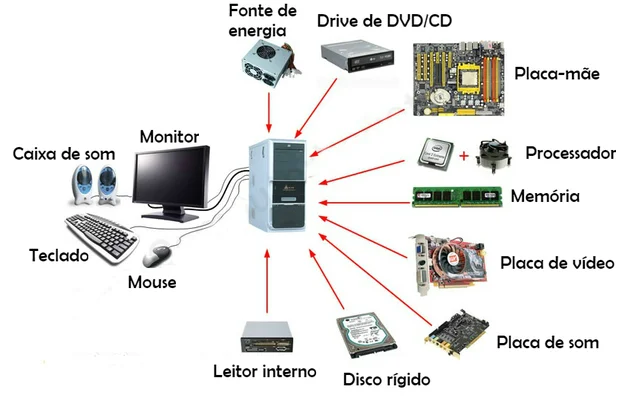
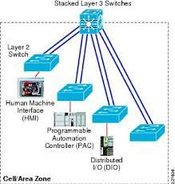

1.COMPONENTES DE MICROCOMPUTADORES
1.1 Componentes internos
1.1.1 CPU
1.1.2 Armazenamento
1.1.3 Memória
1.1.4 Fonte de alimentação
1.2 Componentes externos
1.2.1 Teclado
1.2.3 Mouse
1.2.2 Monitor de vídeo
1.2.3 Mouse
1.2.4 Impressora
>1.2.5 PlotterScanner
1.2.7 Gabinete
1.2.8 Web Cam
1.2.9 Caixas de som
1.2.10 Microfone
1.2.11 Head Set
1.3 Interfaces de entrada e saída
1.3.1 Interfaces sem fio
1.3.2 Áudio
1.3.3 Rede (Ethernet)
1.3.4 VGA
1.3.5 HDMI
1.3.6 USB
1.COMPONENTES DE MICROCOMPUTADORES
1.1 Componentes internos
*Componentes internos: são as peças que se conectam entre si para que o computador funcione.
placa mãe;
memória; processador; HD;

1.1.1 CPU
, Unidade de Central de Processamento,
Core i3, Core i5 e Core i7.
 1.1.2 Armazenamento
1.1.2 Armazenamento
é uma nova geração de dispositivo de armazenamento usado em computadores
Disco Rígido. Por meios ópticos. Exemplos: CD, DVD.
1.1.3 Memória
um local de armazenamento, em que as informações ficam guardadas e, quando há necessidade, recuperadas de forma quase literal.
Memória sensorial. ...
Memória de trabalho. ...
Memória de curto prazo. ...
Memória de longo prazo. ...

1.1.4 Fonte de alimentação
é utilizada para fornecer energia à carga elétrica.

1.2 Componentes externos
são os periféricos utilizados para que o usuário consiga interagir com a máquina:
monitor, teclado, Mouse, caixas de som, impressora.
1.2.1 Teclado
interagir e introduzir dados no computador.
O piano, o órgão, o clavicórdio e o acordeão
Mouse
É um dispositivo de mão que controla o movimento de um ponteiro na tela
>Como exemplo, a Apple utiliza um tipo de mouse diferente em seus computadores chamado Mighty Mouse.
1.2.2 Monitor de vídeo
transmitir informação ao utilizador através da imagem.
LCD, OLED, LED Twisted Nematic
1.2.4 Impressora
permite obter uma cópia em papel de dados contidos no computador.
Impressora a laser,Impressora 3D,Impressora multifuncional,Impressora LED
Plotter
é a máquina usada pra fazer impressões grandes e com bastante qualidade, como mapas, imagens pra quadros e plantas de arquitetura!
os de corte e os de impressão.
Scanner
scanner é um aparelho de leitura
Gabinete
O gabinete é o componente de hardware usado para alocar a maioria das peças de um computador
um case projetado para fontes e placas-mãe ATX pode assumir várias formas externas
Web Cam<
Webcam ou câmera web é uma câmera de vídeo de baixo custo que capta imagens e que as transfere para um computador.
por exemplo. A câmera apresenta correção automática de luz
Caixas de som
uma caixa construída em madeira, MDF ou plástico, contendo uma abertura
House of Marley Get Together Mini, House of Marley Chant Mini,LG XBoom 360 RP4.

Microfone
microfone é um transdutor que converte o som em sinais elétricos.
>Microfones dinâmicos (Dynamic Microphones) Microfones condensadores
Head Set
Headset é um conjunto de fone de ouvido com controle de volume e microfone acoplado para uso em microcomputadores
O HyperX Cloud Stinger é um headset gamer de entrada.
Interfaces de entrada e saída
são responsáveis pela conexão entre as várias partes de um sistema computacional baseado na arquitetura de Von-Neumann.
Um teclado e mouse que fornecem entrada para o computador são chamados de dispositivos de entrada
Interfaces sem fio
a comunicação de dados é realizada por meio de ondas eletromagnéticas, como frequências de rádio, infravermelho e satélite, ao invés de cabos e fios.
RFID, Produtos,NFC, Produtos,Bluetooth, Produtos,ZigBee. Produtos,Wi-Fi,Produtos.
 Áudio
Áudio
O áudio, finalmente, é um elemento de composição que alude ao som e ao ato de ouvir:
MP3. O formato de áudio mais popular é MP3, porque entrega qualidade e tem uma taxa de compressão que o torna bem reduzido.
Rede (Ethernet)
Ethernet é um protocolo de conexão que gerencia como os dispositivos e computadores se comunicam em uma rede local (LAN).
Switchim Ethernet capaz de ligar dois dispositivos em uma rede local, possibilitando a troca de dados sem a necessidade de um provedor externo.

VGA
VGA é a sigla para Video Graphics Array (ou Matriz Gráfica para Vídeo, em português), que identifica o padrão para displays gráficos desenvolvido pela IBM
DVI, S-Video e Component Video.
HDMI
O HDMI é a sigla para High-Definition Multimedia Interface, que em tradução para o português significa Interface Multimídia de Alta Definição
DMI para, por exemplo, conectar o seu notebook a um monitor ou para ligar diversos tipos de dispositivos à sua TV: receptores

USB
USB Ela corresponde ao termo Universal Serial Bus, que em tradução para o português quer dizer Porta Serial Universal. Em outras palavras, consiste em um tipo de cabo que se adapta a uma enorme quantidade de aparelhos diferentes.
USB-A. USB-A é mais comumente usado entre computadores ou tomadas
USB-B As portas USB-B são usadas principalmente para conectar impressoras ou discos rígidos externos em notebooks ou computadores.